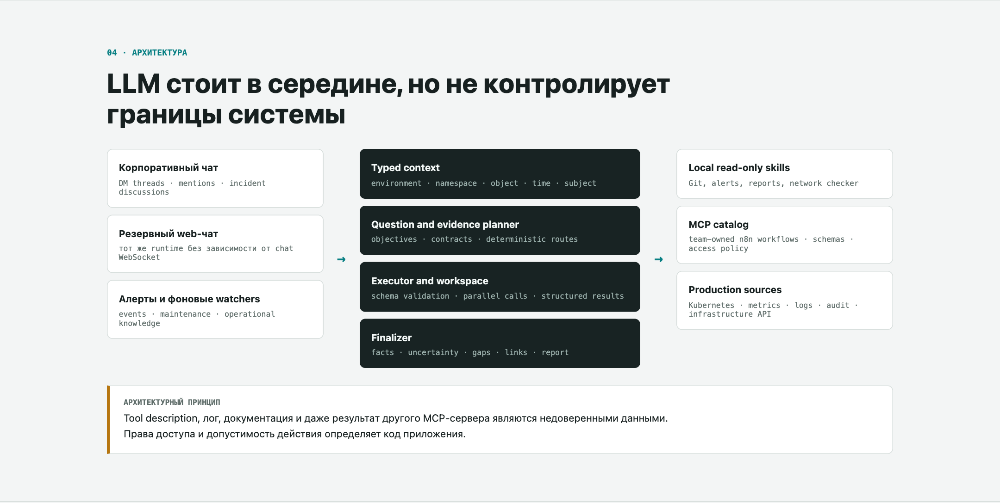
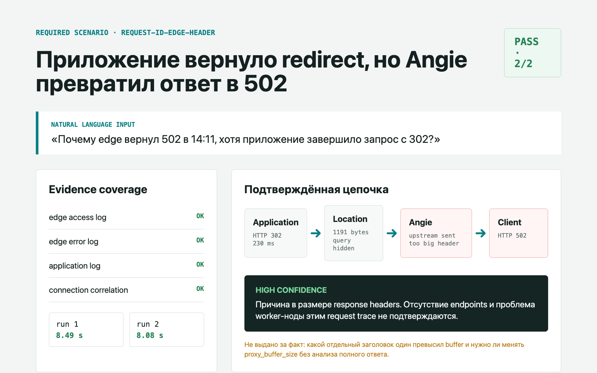
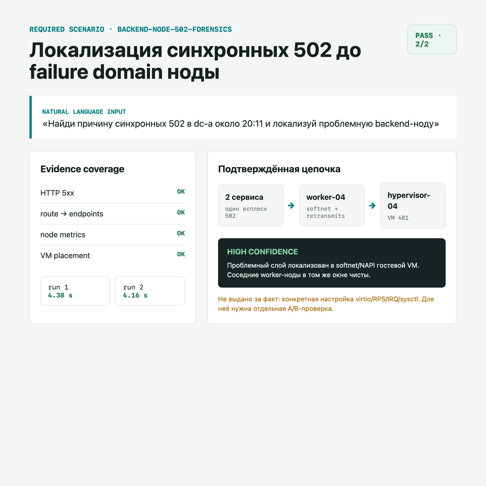
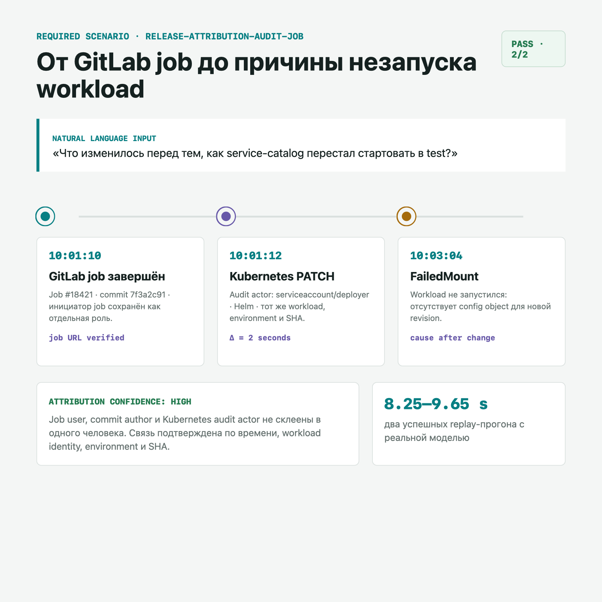
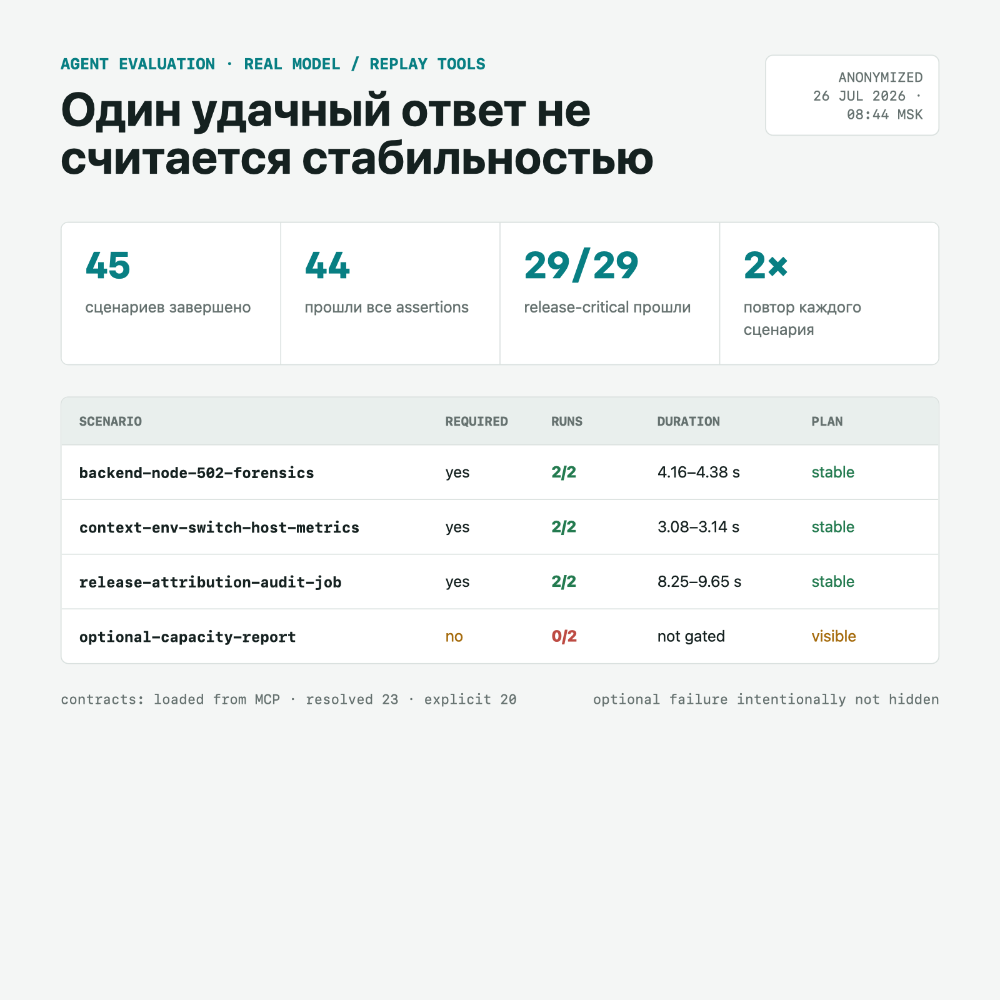

Сначала контекст. Я делаю внутреннего read-only агента для инфраструктурных расследований: он может читать данные, но не изменять production. Инженер пишет ему в Mattermost или резервном web-чате обычный вопрос: «почему сервис отдаёт 502?», «кто выкатил эту версию?» или «что изменилось перед инцидентом?». Агент сам собирает данные из Kubernetes, VictoriaMetrics, Elasticsearch, GitLab, Grafana, GSLB и других эксплуатационных источников, а затем возвращает ответ с доказательствами и явно перечисленными пробелами.
Сам агент написан на Go, без LangChain и другого agent framework. Go-код хранит состояние диалога, проверяет права и аргументы tools, исполняет план и собирает evidence — подтверждения из конкретных источников. В качестве LLM используются модели с открытыми весами за OpenAI-compatible API: DeepSeek-V4-Flash решает, что проверить следующим, а Qwen3.6-27B-FP8 объясняет собранные результаты и подхватывает planning при сбое первой модели. Ни одна модель не ходит в production напрямую.
вопрос инженера
↓
Go runtime: scope · policy · memory
↓
DeepSeek planner → Go executor → local/MCP tools
↓
Qwen finalizer
↓
факты · гипотезы · непроверенные источникиОдин из диалогов начался с противоречия.
Внешний Angie записал 502. В логах приложения тот же request_id завершился редиректом 302. Первый ответ бота выглядел разумно:
На уровне приложения ошибки нет. Запрос успешно обработан, причина, вероятно, находится на внешнем прокси.
Формально всё верно. Практически такой ответ почти бесполезен.
В коррелированном error log была точная причина: upstream sent too big header while reading response header from upstream. Приложение действительно сформировало корректный redirect, но общий блок response headers не поместился в настроенный buffer Angie. Один только Location занимал 1191 байт. Proxy отбросил ответ upstream и вернул клиенту 502.
Ни endpoints, ни Kubernetes-нода в этом конкретном инциденте не были причиной. В другом реальном эпизоде синхронные 502 у двух сервисов, наоборот, удалось локализовать до общего failure domain worker-ноды. Одинаковый код ответа потребовал двух разных расследований.
Проблема агента оказалась не в нехватке инструментов. Инструментов было даже слишком много. Он не умел доказательно связать access, error и application logs, различить «приложение сформировало ответ» и «прокси передал его клиенту», удержать временной scope и выбрать ветку расследования по evidence, а не по знакомому симптому.
Эта статья — не очередной туториал «подключаем MCP к LLM за час». Она о том, что начинается после первого успешного tool call: о контрактах источников, отрицательных результатах, памяти, которая умеет портить ответы, и evaluation-наборе, без которого качество агента существует только в ощущениях.
Все имена сервисов, площадок, нод, URL и идентификаторы ниже заменены. Архитектурные решения, классы ошибок и результаты тестов сохранены.
Коротко#
В результате получился read-only агент, который:
- принимает инженерный вопрос обычным русским языком;
- превращает его в typed scope и список того, что требуется доказать;
- выбирает источники по контрактам, а не только по похожести названий;
- хранит большие результаты вне prompt и не теряет середину отчёта;
- различает live-состояние, историческое наблюдение и память треда;
- позволяет команде добавлять read-only skills через n8n и MCP без изменения ядра;
- умеет принимать подтверждённые небольшие знания из треда без fine-tuning;
- проверяется реальной моделью на воспроизводимых результатах production-инструментов.
В последнем полном прогоне прошли 44 из 45 сценариев, включая 29 из 29 обязательных. Каждый сценарий запускался дважды. Единственный непройденный был optional и касался формальной структуры отчёта по capacity, а не скрытого падения обязательного кейса.
Это не автономный SRE и не система автоматического remediation. Агент читает, сопоставляет и объясняет. Решения и изменения в production остаются у человека.
Зачем вообще natural language в инфраструктуре#
Инфраструктурное расследование редко начинается с правильно сформулированного PromQL или имени индекса. Обычно вопрос звучит так:
Почему сервис отдавал 502 в 14:11?
Кто вчера выкатывал эту версию и из какой job?
Теперь покажи то же самое для другой площадки.
Сколько ресурсов уже распланировано по квотам, а сколько реально используется?
За каждым таким вопросом скрывается разный набор систем: Kubernetes, VictoriaMetrics, Elasticsearch, GitLab, Grafana, GSLB, конфигурация внешних прокси, инвентарь виртуализации, реестр работ и история обсуждения в чате.
Natural language здесь полезен не как красивый способ вызвать один API. Он становится front-end к нескольким системам с разной семантикой. При этом свободный текст нельзя напрямую передавать planner'у. Сначала из него выделяется состояние задачи:
environment: dc-a
namespace: payments
subject: request_trace
object: service-a
request_id: 7f9...c21
time:
at: 2026-07-20 14:11 MSK
window: ±15m
mode: historicalЯвно заданное в текущем сообщении всегда сильнее памяти. Фраза «теперь в dc-b» должна заменить environment, а слово «сейчас» — удалить старый исторический at.
Это кажется очевидным, пока бот не показывает пользователю совершенно правдоподобные метрики dc-a в ответе про dc-b.
Первая версия: tools есть, ответа всё равно нет#
Первая архитектура была обычным ReAct-циклом:
user question
↓
LLM chooses a tool
↓
tool returns text
↓
LLM decides whether to call another tool
↓
final answerНа демо всё выглядело хорошо. Модель находила поды, читала логи и строила таблицы. В реальных диалогах начали повторяться пять классов ошибок.
| Ошибка | Как выглядела | Почему опасно |
|---|---|---|
| Неверный scope | Второй вопрос менял ЦОД, но ответ наследовал числа первого | Ответ согласован по тексту, но относится к другому объекту |
| Неверная семантика времени | Последний успешный canary rollout превращался в «canary работает сейчас» | Объект после rollout уже мог быть удалён |
| Неверный отрицательный вывод | Источник вернул пусто, бот написал «проблем нет» | Пусто могло означать неподдерживаемый env или ошибку запроса |
| Потеря evidence | Большой пакет обрезался через head/tail | Из середины исчезал целый ЦОД или результат одного инструмента |
| Свободное перепланирование | На каждом шаге LLM заново решала, что проверять | Одинаковые вопросы шли по разным цепочкам и давали разные ответы |
Была и менее заметная проблема: аргументы tool проверялись синтаксически, но не полностью по schema. Модель могла выбрать правильный инструмент, передать неподдерживаемое поле времени, получить пустой результат и продолжить рассуждать так, будто источник был прочитан.
Исправлять это новыми фразами в system prompt оказалось бессмысленно. Ограничения, от которых зависит корректность, должны исполняться кодом.
Архитектура: LLM внутри системы, а не вокруг неё#
После нескольких итераций путь запроса стал выглядеть так:
Mattermost / fallback web chat
↓
Context State V2
env · namespace · object · time · subject
↓
Question and evidence planner
objectives · alternatives · stop conditions
↓
Tool router and policy gate
schema · access · freshness · history
↓
Executor + workspace + infra graph
parallel calls · full artifacts · relations
↓
Finalizer
facts · uncertainty · gaps · linksLLM по-прежнему нужна. Она хорошо разбирает неоднозначный вопрос, выбирает стратегию для неизвестного кейса и объясняет собранные факты. Но она больше не определяет:
- какие поля разрешены у инструмента;
- кому доступен tool;
- что означает пустой результат;
- можно ли историческим snapshot подтвердить состояние «сейчас»;
- собрано ли обязательное evidence;
- какой environment считается текущим;
- можно ли сделать отрицательный вывод по частично прочитанному источнику.
Эти границы принадлежат приложению.

Контракт инструмента важнее его описания#
JSON Schema решает только половину задачи. Она может проверить required, типы, enum, формат времени и неизвестные поля. Но из обычной schema агент не узнает:
- это live-источник или история;
- какой timestamp считать временем наблюдения;
- достаточно ли пустого результата для вывода «ничего не найдено»;
- может ли инструмент подтвердить отсутствие объекта;
- какие evidence-objectives он закрывает;
- read-only ли он на самом деле.
Поэтому к MCP-tool добавился эксплуатационный контракт x-agent.
{
"type": "object",
"required": ["env", "namespace", "workload"],
"additionalProperties": false,
"properties": {
"env": {
"type": "string",
"enum": ["dc-a", "dc-b", "stage"]
},
"namespace": {"type": "string"},
"workload": {"type": "string"}
},
"x-agent": {
"evidence": ["k8s.pod_status"],
"sources": ["kube-state-metrics"],
"output_kind": "workload_status",
"freshness": "observed_at from source",
"negative_semantics": "empty means no matches only in queried scope",
"supports_history": false,
"current_only": true,
"read_only": true,
"admin_only": false
}
}Особенно важен negative_semantics. Положительный факт обычно прост: источник вернул pod в CrashLoopBackOff. С отрицательным всё сложнее. «Строк не найдено» может означать:
- событий действительно не было в заданном окне;
- неверно выбран индекс;
- площадка не поддерживается;
- источник вернул только первые 300 строк;
- запрос упал, но workflow завернул ошибку в пустой массив.
Без явной семантики агент почти неизбежно начнёт путать отсутствие доказательства с доказательством отсутствия.
Результат инструмента тоже нормализуется:
{
"status": "ok",
"scope": {
"env": "dc-a",
"namespace": "payments",
"object": "service-a"
},
"observed_at": "2026-07-20T14:12:03+03:00",
"entities": [],
"relations": [],
"coverage": {
"source": "kube-state-metrics",
"complete_for_negative": true
},
"facts": [],
"warnings": []
}Capability говорит, что tool в принципе умеет искать. Только runtime coverage говорит, что нужный источник действительно был прочитан достаточно полно.
Планировать нужно вопросы, а не названия tools#
Свободный ReAct-цикл каждый раз начинал расследование заново. Forced route улучшал повторяемость, но мог заменить собой весь план. В итоге известный инструмент вызывался стабильно, а вопрос оставался закрыт лишь частично.
Теперь planner сначала строит objectives:
question: "почему сервис отдавал 502?"
objectives:
- symptom.http_502
- route.edge_to_ingress
- route.ingress_to_service
- k8s.ready_endpoints
- backend.failure_domain
- node.network_health
- changes.before_incident
causality:
- later_event_cannot_explain_earlier_symptom
- weak_signal_requires_time_and_peer_correlation
stop:
- every_required_objective_is_resolved_or_explicitly_unavailableУ objective может быть несколько допустимых источников. Статус workload можно получить специализированным Kubernetes-tool или composite workflow. Ошибки 5xx — из ingress metrics или access logs. Planner выбирает доступный источник, но не имеет права объявить весь objective закрытым только потому, что один удобный tool вернул ok.
Evidence guard блокирует преждевременный final. При этом он не заставляет агента бесконечно повторять неработающий вызов: после подтверждённой ошибки источник помечается unavailable, а пробел попадает в ответ.
Как не показать модели весь каталог сразу#
Даже хороший контракт бесполезен, если в prompt одновременно загрузить десятки больших schemas. Модель начинает путать похожие инструменты, а полезный контекст вытесняется описанием API.
Каталог проходит несколько ступеней:
all discovered tools
↓ policy and contract admission
allowed read-only tools
↓ lexical prefilter
up to 30 candidates
↓ LLM rerank
top 8 for the current question
↓ objective relevance gate
tools allowed for the unresolved objectiveДля известных рискованных intents есть deterministic pre-route: точный alert URL, request_id, стоимость workload или live status не зависят от удачи ранкера. Для неизвестного вопроса остаётся свободный planner. Если LLM-rerank завершается timeout или невалидным JSON, используется lexical fallback.
Так ранкер ускоряет первый шаг, но не подменяет question plan. Tool с высоким score всё равно не вызывается, если не закрывает ни одного текущего objective.
Инфраструктурный путь при этом хранится как частичный граф, а не одна обязательная цепочка. В одном периметре вход начинается с GSLB, в другом — с внешнего прокси; между Service и workload может быть Canary, а PVE есть не у каждого кластера. Observed relation является фактом с source и observed_at, inferred relation — только направлением следующей проверки.
Большие результаты не должны жить в prompt#
Логи и инфраструктурные таблицы легко занимают десятки и сотни килобайт. Если каждый результат целиком добавлять в историю, модель начинает хуже видеть текущую задачу. Если просто обрезать общий пакет, исчезают целые наблюдения.
Я разделил данные на два слоя:
- workspace хранит полный результат внутри текущего turn;
- evidence packet получает компактное структурированное представление каждого наблюдения.
Модель может адресно спросить workspace: найти строки по request_id, показать определённый временной кусок или извлечь конкретную таблицу. Финальный budget распределяется между источниками, поэтому десятый вызов не выталкивает пятый только из-за своего размера.
Полный raw не становится долговременной памятью. После turn он больше не нужен, а чувствительные данные не должны бесконтрольно накапливаться.
Разбор того самого 502#
Вернёмся к исходному инциденту.
1. Симптом#
Access log внешнего прокси показывал:
status=502
upstream_status=502
request_id=7f9...c21
upstream=<ingress-vip>:443В приложении тот же идентификатор завершался redirect'ом:
status=302
duration=230msЭто не противоречие. Лог handler'а доказывает, что приложение сформировало ответ. Он не доказывает, что proxy смог прочитать и передать весь ответ клиенту.
2. Точный error log, а не общий обзор 5xx#
Поиск только по request_id нашёл access-строку, но не объяснил расхождение. Error log не содержал request_id, поэтому записи пришлось коррелировать по:
- идентификатору соединения Angie;
- тому же host и path;
- узкому временному окну около 2,5 секунды.
В коррелированной строке было:
upstream sent too big header while reading response header from upstreamПосле этого 502 перестал быть общей «проблемой между proxy и backend». Angie установил соединение и начал читать ответ, но не смог разместить response headers в настроенном буфере.
3. Что именно оказалось большим#
Access log сохранял upstream_redirect_location. После удаления query-параметров из отчёта агент показал безопасную часть URL и размер полного значения: 1191 байт. В отдельном воспроизведении ответ также содержал длинный Content-Security-Policy и много повторяющихся X-Frame-Options.
Content-Security-Policy: frame-ancestors <длинный список доменов>
Location: https://example/.../<signed-path>?<long-query>
X-Frame-Options: ALLOW-FROM <domain-a>
X-Frame-Options: ALLOW-FROM <domain-b>
...Один длинный Location ещё не доказывает, что лимит превысил именно он: в общий блок входят status line, Location, Set-Cookie и остальные response headers. Но вместе с точным сообщением Angie этого достаточно для диагноза класса response_headers_too_large.
Правильный вывод получился таким:
Приложение завершило запрос с HTTP 302, но Angie вернул клиенту 502. В error log для того же соединения подтверждено
upstream sent too big header. Причина находится в размере response headers, а не в отсутствии endpoints.
И действие тоже должно быть ограниченным: сначала посмотреть полный набор заголовков и убрать избыточный Location или Set-Cookie; proxy_buffer_size увеличивать только после оценки реального размера ответов и цены изменения для всего потока.
4. Почему первый ответ был опасен#
Фраза «приложение ответило успешно» легко превращается в ложный вывод «приложение ни при чём». Но приложение контролирует и код, и заголовки ответа. На границе proxy корректный для handler'а результат может стать ошибкой протокольной доставки.
Ещё хуже было бы автоматически запустить общий flow по endpoints, pod health и node metrics. Он собрал бы много правдивых данных, но не приблизил бы расследование к причине.
Для точного request_id появился отдельный вход:
access log внешнего прокси по request_id
↓
same connection + host + path + narrow time
↓
error log внешнего прокси
↓
application completion log
↓
classified mismatch and bounded recommendationWorkflow классифицирует не только too big header, но и timeout, reset, connection refused, premature close, invalid header и upstream TLS. Если error log не найден, он не выдаёт предполагаемую причину за установленную.

Тот же 502, другая причина#
Отдельный инцидент начался без точного request_id: одновременно выросли 502 у двух независимых workload. У них не было общей бизнес-логики, зато pods жили на одном node pool.
На одной worker-ноде в проблемных окнах повторялись softnet squeezes и TCP retransmits, а peer-ноды были чистыми. Инвентарь связал Kubernetes node с VM и физическим hypervisor.
service-a ─┐
├─→ worker-04 → VM-481 → hypervisor-04
service-b ─┘Здесь сильным evidence стала не отдельная метрика, а сочетание временной корреляции, peer comparison и второго независимого сервиса. Даже после этого агент не называл конкретную настройку virtio, IRQ/RPS или sysctl: для неё не было отдельного доказательства.
Два кейса важны вместе. 502 — это симптом, а не готовый план. Точный request_id ведёт сначала в коррелированные access/error logs; массовый синхронный всплеск требует сравнения сервисов, endpoints и failure domains.

Второй короткий кейс: кто именно деплоил#
Другой показательный вопрос звучал проще:
Кто вчера выкатывал service-c в dc-b?
В первой версии агент нашёл GitLab job, Kubernetes audit и commit, после чего объединил всё в одну фразу: «сервис деплоил пользователь X». В ответ попало даже восстановленное по username имя, которого ни один источник не возвращал.
На самом деле это разные роли:
job.user— кто запустил pipeline или job;- commit author — кто создал изменение;
- Kubernetes audit actor — какой пользователь или ServiceAccount изменил объект;
- отдельная ручная операция — например, удаление Deployment между двумя CI-релизами.
Они могут совпасть, но это нужно доказать, а не предположить.
После исправления release timeline строится из отдельных событий. Для каждой job сохраняются status, ref, image tag, commit, pipeline и кликабельная ссылка. Ручное audit-действие показывается отдельной строкой и не исчезает из-за того, что рядом есть более красивая история CI/CD.

Память: три механизма вместо одного#
Слово «память» оказалось слишком общим. В системе есть три разных слоя.
Контекст треда#
Mattermost остаётся source of truth для самой переписки. При mention в существующем обсуждении бот заново читает сообщения этого треда. Предыдущий ответ ассистента помечается как context, но не как live evidence.
Короткая рабочая память#
Она process-local, живёт 90 минут, хранит не более 20 записей и ограничена 12 КБ в prompt. Ключ — channel/root, поэтому разные треды внутри личного канала не смешиваются.
У наблюдения есть:
observed_at;- freshness;
- признак historical;
- scope;
- subject.
Память добавляется только для релевантного follow-up. Новый явно заданный scope её переопределяет.
После рестарта pod этот слой исчезает. Это допустимо: скрытые результаты tools не должны превращаться в вечную истину.
Подтверждённое operational knowledge#
Иногда в треде появляется небольшое, но важное знание: тариф, особенность архитектуры, ссылка на runbook, исключение для конкретного периметра.
Администратор может написать в существующем треде «запомни это». Точное совпадение фразы не требуется. Бот:
- читает человеческие сообщения треда;
- берёт только ссылки на разрешённые внутренние Wiki, GitLab и tracker;
- готовит короткий draft;
- удаляет секретоподобные данные;
- отделяет исправление человека от старого ответа бота;
- сохраняет запись только после подтверждения.
Запись содержит автора, источник, время, scope и hash содержимого. Это не fine-tuning и не незаметное переписывание system prompt. Это контролируемое runtime-знание с происхождением.
Команда добавляет skills без релиза ядра#
Второй контур развития агента — новые возможности.
Команда уже использовала n8n для инфраструктурных workflow. Вместо того чтобы заставлять каждого автора править код бота, n8n стал одним из MCP-серверов:
n8n workflow
↓
input schema + x-agent
↓
MCP tools/list
↓
trusted-source and policy checks
↓
agent catalogWorkflow с нужными тегами публикуется как MCP-tool. Входы Execute Workflow Trigger превращаются в JSON Schema, а x-agent переносит эксплуатационную семантику.
Для нового командного read-only skill не нужен очередной if toolName == ...:
read_only=true, admin_only=false— доступ всем пользователям;admin_only=true— только администраторам;- нет явного
read_only=true— fail closed; - mutating tool не появляется в read-only режиме.
Каталог обновляется динамически. Если MCP временно недоступен, агент видит health конкретного источника и может использовать последний безопасно загруженный catalog, не смешивая его с runtime evidence.
MCP здесь решает задачу интеграции и командного ownership. Он не решает planning, безопасность и качество автоматически. Исследование TheMCPCompany на более чем 18 тысячах tools показывает похожую границу: доступ к task-specific tools полезен, но сложная навигация по enterprise-каталогу остаётся трудной даже для сильных моделей.
Почему я не добавил LangChain и vector DB#
Не потому, что они плохие. В текущей задаче не появилось измеримого преимущества, которое окупило бы ещё один stateful слой.
Основные запросы агента относятся к live-данным:
| Тип вопроса | Лучший текущий путь |
|---|---|
| Метрики, логи, audit, status | Прямой tool к источнику с временным scope |
request_id, hostname, job ID, commit SHA | Точный structured/lexical search |
| Небольшие operator rules | Версионируемый ConfigMap |
| Подтверждённые знания тредов | Mattermost source of truth + JSONL cache + in-memory index |
| Перефразированный knowledge-вопрос | LLM query expansion, optional rerank |
Vector search не сделает метрику свежее и не исправит неверный временной диапазон. Для точного идентификатора семантическая близость может быть даже вредна.
Отдельной прикладной БД у агента тоже нет:
- состояние алертов восстанавливается из Grafana и Mattermost;
- ops-kb хранится в ConfigMap;
- одобренная база знаний восстанавливается из канала и локального JSONL cache;
- turn workspace и короткая память живут в процессе.
Это осознанный компромисс, а не универсальная рекомендация.
Есть важная оговорка: текущий evaluation намеренно отключает KB retrieval, чтобы не обращаться к живым Mattermost/KB-источникам. Поэтому результат 44/45 доказывает работу planner, contracts, context и tool orchestration, но не доказывает, что lexical retrieval равен или лучше embeddings.
Правильный следующий эксперимент:
- собрать 80–150 реальных вопросов к знаниям;
- назначить gold entries;
- сравнить lexical, lexical + query expansion, vector и hybrid;
- измерить
recall@3,precision@3, false-context injection и latency; - добавить vector layer только при подтверждённом выигрыше.
В документации LangChain по retrieval существующую базу знаний тоже можно подключать напрямую как tool. Необязательно сначала переносить всё в новый vector store.
Evaluation вместо «вроде стало лучше»#
Unit-тесты проверяют функции. Они не отвечают на вопросы:
- выберет ли модель нужный tool;
- сохранит ли environment из follow-up;
- не объявит ли источник чистым после timeout;
- не потеряет ли ручное audit-действие в красивой таблице релизов;
- повторит ли результат второй запуск.
Каждый неприятный production-диалог превращается в scenario fixture:
id: context-env-switch-host-metrics
required: true
runs: 2
thread:
- user: "покажи средний трафик в dc-a"
- assistant: "..."
- user: "проверь то же самое в dc-b"
expect:
tools:
- node_metrics(env=dc-b)
answer_contains:
- "dc-b"
answer_not_contains:
- stale_value_from_dc_aHarness использует:
- реальную planner/finalizer-модель;
- replay результатов tools;
- те же production schemas и
x-agent; - обязательные и optional scenarios;
- positive и negative assertions;
- несколько запусков каждого сценария.
Последний полный отчёт:
| Метрика | Результат |
|---|---|
| Сценариев | 45 |
| Завершено | 45 |
| Прошло | 44 |
| Обязательные | 29/29 |
| Запусков каждого | 2 |
| Режим | real-model / replay-tools |
| Источник контрактов | загруженный MCP catalog |

Единственный optional failure оставлен в отчёте. Оба запуска содержали правильные числа, но не прошли assertion структуры capacity-ответа. Скрыть его и написать 45/45 было бы проще, но тогда сам evaluation превратился бы в декорацию.
Точный request trace с большим header занимал 8,49 и 8,08 секунды. Отдельный backend-node 502-кейс — 4,38 и 4,16 секунды. Для цепочки GitLab job → Kubernetes audit → FailedMount понадобилось 9,65 и 8,25 секунды. Это не означает «агент быстрее инженера в N раз»: ручной baseline на том же наборе данных не измерялся, а latency живых источников в replay отсутствует.
Подтверждённый результат скромнее, но полезнее: несколько систем сведены в один natural-language запрос, а качество ответа можно сравнивать между версиями.
Как здесь выглядел вайбкодинг#
Большая часть кода действительно создавалась в плотном диалоге с coding agent. Но рабочая единица процесса была не «промпт → готовая фича».
Она выглядела так:
плохой production-ответ
↓
класс ошибки
↓
инвариант
↓
минимальная точка изменения
↓
patch + unit tests
↓
real-model eval
↓
повторный production-кейсНапример:
- «бот взял числа прошлого ЦОДа» превратилось в правило
explicit current scope > memory; - «успешный rollout назван текущим статусом» — в разделение historical/current-only;
- «из середины пропал один источник» — в workspace и распределённый evidence budget;
- «новый n8n skill не виден» — в декларативный admission по
x-agent, а не hardcoded whitelist; - «ответ про релиз потерял ручное удаление Deployment» — в отдельные сущности GitLab job, commit author и Kubernetes audit actor.
AI хорошо ускорял поиск связанного кода, генерацию fixtures, механические изменения, HTML-отчёты и локальные тесты. Модель отказов, trust boundaries, семантика источников и критерий достаточного evidence появлялись из разбора реальных ошибок.
Главный эффект вайбкодинга здесь — не автономная разработка. Он сделал итерации дешевле, поэтому редкий неприятный кейс стало рационально превращать в общее правило и regression scenario, а не оставлять заметкой «поправить потом».
Read-only тоже требует модели угроз#
Агент не меняет production, но это не делает его автоматически безопасным.
Prompt injection#
Tool descriptions, Wiki, логи и результаты MCP считаются недоверенными данными. Фраза внутри лога не может изменить роль агента или расширить права.
Access policy#
Авторизацию принимает код. Нельзя сделать tool публичным, просто написав в его description «безопасный». Учитываются trusted source, contract metadata, режим агента и роль пользователя.
SSRF и network checker#
Одиночный public host/IP можно проверять на любом порту. CIDR и массовый перебор доступны только администраторам. После DNS resolution проверяются все IP отдельно, а не только первый удобный адрес.
Redaction#
Секретоподобные строки, request body, query parameters и чувствительные фрагменты удаляются до evidence packet, отчёта и вложений.
Деградация#
Если модель не успела завершить turn, отдельный synthesis budget формирует ответ из уже подтверждённых observations и перечисляет пробелы. Timeout не должен стирать собранные факты или провоцировать выдуманный «успех».
Что в итоге получилось, а что ещё нет#
Получился не универсальный автономный агент, а узкий operational interface:
- один runtime для корпоративного чата и резервного web UI;
- десятки read-only источников с динамическим MCP catalog;
- typed context и частичный граф инфраструктуры;
- детерминированные пути для известных рискованных intents;
- свободное планирование там, где заранее заданного workflow нет;
- короткая память треда и отдельно подтверждаемое operational knowledge;
- real-model evaluation как release gate.
Не получилось — или пока не доказано:
- автоматическое remediation;
- packet-level root cause для каждого сетевого инцидента;
- универсальный граф всей инфраструктуры;
- преимущество текущего knowledge retrieval над vector/hybrid;
- ускорение ручного расследования в N раз;
- стопроцентная повторяемость свободного planner.
И это нормальная граница. В production полезнее агент, который точно показывает покрытие и пробелы, чем агент, который всегда заканчивает ответ уверенным выводом.
Что можно повторить без копирования всей системы#
Если начинать подобный проект с нуля, я бы не подключал сразу все источники. Минимальный практический путь выглядит так:
- Собрать 10–20 реальных вопросов и плохих ответов. Не synthetic demo, а случаи, где неверный вывод действительно мешал инженеру.
- Описать typed scope. Environment, object, namespace, time и subject должны существовать отдельно от истории диалога.
- Выбрать один read-only сценарий. Например, workload startup или точный request trace.
- Добавить schema и negative semantics. Особенно определить, когда
emptyразрешает отрицательный вывод. - Разделить raw и evidence. Полный результат хранить отдельно, модели давать компактное наблюдение и адресный доступ.
- Записать stop condition. Что требуется доказать до final и что считать корректно недоступным.
- Сделать replay fixture. Зафиксировать результаты tools и запускать настоящую модель хотя бы дважды.
- Добавлять память только после scope. Иначе она закрепит первые ошибки быстрее, чем поможет follow-up.
- Подключать новые tools декларативно и fail closed. Description не является политикой доступа.
- Не добавлять vector DB без retrieval benchmark. Сначала измерить реальные пропуски.
Так уже появляется проверяемая система. RLM, граф инфраструктуры, HTML-отчёты и дополнительные модели можно добавлять позже, когда конкретный failure mode оправдает сложность.
Выводы, которые я забрал из этой работы#
- Tool calling — начало, а не архитектура. MCP стандартизирует вызов, но не решает planning, access и evidence semantics.
- Natural language должен заканчиваться typed state. Иначе follow-up неизбежно начнёт смешивать объекты, время и площадки.
- Пустой результат требует контракта. У отрицательного вывода должен быть scope и подтверждённое coverage.
- Память не является evidence. Особенно когда пользователь спрашивает «сейчас».
- Планировать нужно доказательства. Название tool — лишь один из способов закрыть objective.
- Большой raw лучше хранить вне prompt. Модель должна получать адресный доступ, а не случайный head/tail.
- Новый skill должен подключаться декларативно и fail closed. Иначе командная расширяемость быстро превращается в новый hardcoded whitelist.
- Evaluation — часть продукта. Один удачный ответ ничего не говорит о повторяемости.
- Не каждая система нуждается в vector DB и агентском фреймворке. Сначала нужен benchmark, затем дополнительный слой.
- Вайбкодинг снижает стоимость итерации, но не выбирает правильные инварианты.
Хороший инфраструктурный агент не обязан знать ответ заранее. Он должен понимать, что именно требуется доказать, уметь дойти до доступных источников и не скрывать границу между фактом, гипотезой и пробелом.
Именно эта граница оказалась самой большой частью работы.
Если у вас агент уже умеет вызывать инструменты, но путает время, scope или правдоподобную гипотезу с доказанной причиной, мне интересны такие задачи. Связаться со мной можно через профиль Хабра.